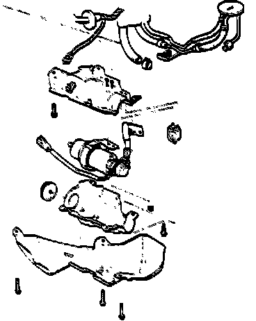
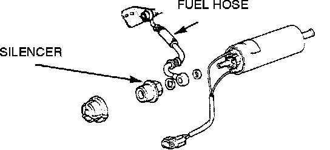

Fuel Pump: Service and Repair
WARNING: Do not smoke while working on the fuel system. Keep open flame away from your work area. Make sure the engine is OFF before relieving the fuel pressure.1. Place a shop towel under the fuel filter.
2. Relieve the fuel pressure.
a. Disconnect the negative battery cable.
b. Remove the fuel tank filler cap.
c. Use a box end wrench on the 6mm service bolt at the top of the fuel filter, while holding the special banjo bolt with another wrench.
Fuel Filter:

d. Place a rag or shop towel over the 6mm service bolt and SLOWLY loosen the 6mm service bolt one complete turn.
3. Jack up vehicle and place jack stands in there proper locations.
4. Remove left rear wheel.
5. Remove the Fuel Pump cover.
Fuel Pump Replacement:

6. Remove the three (3) mounting bracket bolts, then remove the Fuel Pump with is's mount.
7. Disconnect the fuel lines and electrical wires at their connectors.
8. Remove the Fuel Pump clamp and then remove the Fuel Pump.
Fuel Line:

9. Remove the fuel line and the silencer from the top of the Fuel Pump.
CAUTION: DO NOT disassemble the Fuel Pump.
10. Install the new Fuel Pump on it's mount.
11. Carfully clean the sealing surface of the flared fuel line, then install it on the Fuel Pump and tighten the flare nut. Reinstall the fuel hose and silencer on the top of the Fuel Pump.
CAUTION: Clean the flared joints of high pressure hoses thoroughly before reconnecting them.
12. Reconnect the electrical wires and reinstall the Fuel Pump with its mount.
13. Check the Fuel Pump hose connections for leaks.